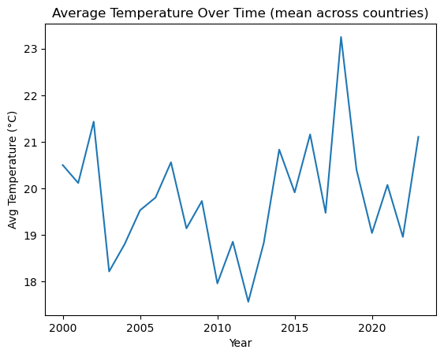
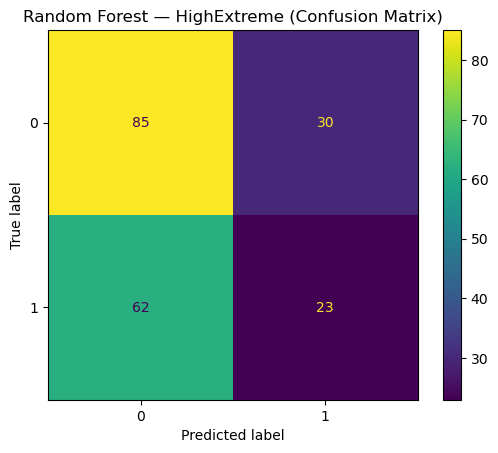

Modeling Extreme Weather Risk from Climate and Socioeconomic Features
Author
Cassidy Riedel
Published
January 28, 2026
Project Overview
This project analyzes a multi-country climate dataset (2000–2023) to explore relationships between temperature, emissions, rainfall, sea level rise, renewable energy usage, and extreme weather. Using machine learning, I build a Random Forest classifier to predict whether a country experiences a high number of extreme weather events based on environmental and economic indicators in a certain year.
Research Questions
How have climate indicators (temperature, CO2, sea level, rainfall) changed over time?
Which factors are most associated with extreme weather events?
Can we classify country-years as “High Extreme Events” vs “Not High”?
How well does a Random Forest model perform (confusion matrix + ROC/AUC)?
Model evaluation (confusion matrix, ROC curve, AUC)
Why does this matter? Extreme weather events have real impacts on people, infrastructure, and ecosystems. Flooding, heat waves, storms, and drought can disrupt daily life and create major economic and public health costs. Understanding which factors are most associated with higher counts of extreme events (such as temperature, emissions, rainfall patterns, and land/energy use) can help support climate risk awareness and better long-term planning.
From a data science perspective, building a model that predicts “high extreme weather” years demonstrates how environmental indicators can be combined into a measurable, interpretable risk signal.
Import Libraries
Code
import pandas as pdimport numpy as npimport matplotlib.pyplot as pltimport plotly.express as pximport seaborn as snsfrom sklearn.linear_model import LinearRegressionfrom sklearn.model_selection import train_test_splitfrom sklearn.ensemble import RandomForestClassifierfrom sklearn.metrics import confusion_matrix, ConfusionMatrixDisplay, roc_curve, auc
Load the Dataset
Code
data = pd.read_csv("/Users/cassidyriedel/Downloads/Resume Projects/climate_change_dataset.csv")data.head()
Year
Country
Avg Temperature (°C)
CO2 Emissions (Tons/Capita)
Sea Level Rise (mm)
Rainfall (mm)
Population
Renewable Energy (%)
Extreme Weather Events
Forest Area (%)
0
2006
UK
8.9
9.3
3.1
1441
530911230
20.4
14
59.8
1
2019
USA
31.0
4.8
4.2
2407
107364344
49.2
8
31.0
2
2014
France
33.9
2.8
2.2
1241
441101758
33.3
9
35.5
3
2010
Argentina
5.9
1.8
3.2
1892
1069669579
23.7
7
17.7
4
2007
Germany
26.9
5.6
2.4
1743
124079175
12.5
4
17.4
Clean Dataset
Code
data = data.drop_duplicates()num_cols = ["Year","Avg Temperature (°C)","CO2 Emissions (Tons/Capita)","Sea Level Rise (mm)","Rainfall (mm)","Population","Renewable Energy (%)","Extreme Weather Events","Forest Area (%)"]data.isna().sum()
Year 0
Country 0
Avg Temperature (°C) 0
CO2 Emissions (Tons/Capita) 0
Sea Level Rise (mm) 0
Rainfall (mm) 0
Population 0
Renewable Energy (%) 0
Extreme Weather Events 0
Forest Area (%) 0
dtype: int64
plt.figure()data.groupby("Year")["Avg Temperature (°C)"].mean().plot()plt.title("Average Temperature Over Time (mean across countries)")plt.xlabel("Year")plt.ylabel("Avg Temperature (°C)")plt.show()

Figure 1. Mean annual average temperature across all countries in the dataset (2000–2023). Each point represents the average of “Avg Temperature (°C)” for all countries in a given year, showing year-to-year variability and potential warming in later years.
Figure 2. Histogram + KDE (distribution of temperatures)
Code
plt.figure()sns.histplot(data["Avg Temperature (°C)"], bins=30, kde=True, color="teal")plt.title("Distribution of Average Temperature (°C)")plt.xlabel("Avg Temperature (°C)")plt.ylabel("Count")plt.show()
Figure 2. Distribution of average temperatures across all country-years, showing the overall range and where most observations fall.
Figure 3. Scatterplot (Europe CO₂ vs Temperature) + trendline
Code
europe = data[data["Country"].isin(["UK", "France", "Germany"])]fig = px.scatter( europe, x="CO2 Emissions (Tons/Capita)", y="Avg Temperature (°C)", color="Country", hover_data=["Year", "Sea Level Rise (mm)", "Rainfall (mm)", "Renewable Energy (%)", "Forest Area (%)"], trendline="ols", title="Europe Only: CO₂ Emissions vs Average Temperature (with Trendline)")fig.show()
Figure 3. Interactive scatterplot for European countries (UK, France, Germany) showing the relationship between CO₂ emissions per capita and average temperature across country-years (2000–2023). Points are colored by country, hover reveals year and other indicators, and the fitted OLS trendline summarizes the overall direction of the relationship within this subset.
Figure 4. Violin plot (Extreme weather events by High/Not High label)
In a Jupyter environment, please rerun this cell to show the HTML representation or trust the notebook. On GitHub, the HTML representation is unable to render, please try loading this page with nbviewer.org.
Baseline Random Forest achieved AUC ≈ 0.48, indicating limited predictive signal with the initial label definition and split strategy. Next, I improved the experimental setup by using time-based splits and alternative label definitions (top quartile / within-country) to better reflect meaningful ‘extreme’ conditions.
Redefine “HighExtreme”
Code
df_clean = data.sort_values(["Country", "Year"]).reset_index(drop=True)# Country-relative label: 1 if this year is above that country's mediandf_clean["HighExtreme"] = ( df_clean["Extreme Weather Events"] > df_clean.groupby("Country")["Extreme Weather Events"].transform("median")).astype(int)df_clean["HighExtreme"].value_counts()
cm = confusion_matrix(y_test, y_pred)ConfusionMatrixDisplay(cm).plot()plt.title("Random Forest — HighExtreme (Confusion Matrix)")plt.show()

Confusion matrix for the Random Forest classifier predicting HighExtreme (years with above-median extreme weather events relative to each country’s baseline). The matrix summarizes correct vs. incorrect classifications on the test set, showing true negatives/positives and where the model most often misclassifies high-extreme years.
ROC curve for the Random Forest model predicting HighExtreme after redefining the label relative to each country’s median extreme-weather baseline. The model achieves an AUC of 0.516, indicating slight improvement over random guessing and limited but measurable predictive signal in the available features.
Random Forest feature importance rankings for predicting HighExtreme (above-country-median extreme weather years). Rainfall, renewable energy share, and average temperature contribute the most predictive signal, followed by forest area, population, and CO₂ emissions; several country dummy variables have smaller but nonzero influence.
Interpretation
The feature importance plot suggests that rainfall, renewable energy share, and average temperature contribute the most to the model’s predictions, with additional signal from forest area, population, and CO₂ emissions. Because Random Forest feature importance reflects how often a feature helps split the data, it should be interpreted as relative influence rather than proof of causation.
Limitations
AUC is modest (~0.52), meaning the features provide limited predictive signal for above-baseline extreme event years.
The dataset is aggregated at the country-year level, which can hide regional variability (storms and floods are local).
“Extreme Weather Events” is treated as a single count, but different event types may have different drivers.
This analysis is correlational and does not imply causation.
Reflection
This project showed me that building a model is not just about picking an algorithm—it’s about how the problem is defined. My first attempt at predicting “HighExtreme” using a global threshold produced near-random results, which forced me to step back and rethink the label. Redefining “HighExtreme” relative to each country’s baseline created a more meaningful target and improved performance (AUC increased to ~0.52).
I also learned how important evaluation choices are. Using ROC/AUC and confusion matrices helped me see where the model struggled (especially correctly identifying HighExtreme cases), and feature importance gave me a way to explain what the model relied on. Even though the model’s performance was modest, the process was valuable because it highlighted dataset limitations and the need for higher-resolution climate and hazard data to make stronger predictions.
Overall, this project strengthened my ability to clean data, design a defensible target variable, build and evaluate a machine learning model, and communicate results honestly—skills I want to bring to an internship in environmental data science.